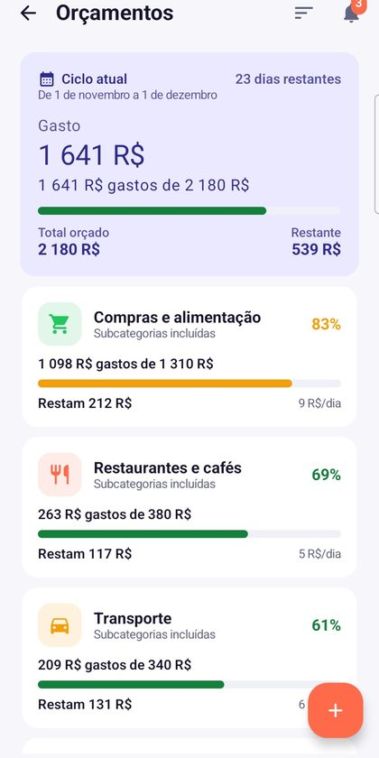
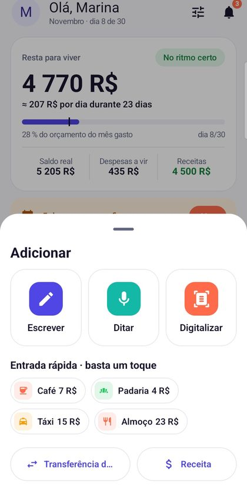
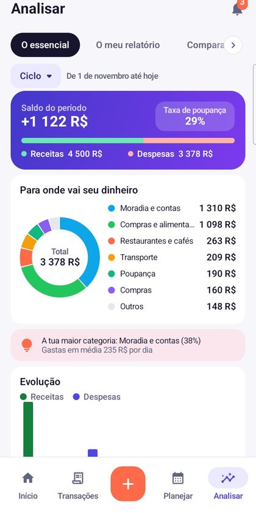

O orçamento que acompanha o seu salário.
O Walletz calcula quanto sobra até o próximo pagamento, confirma suas despesas fixas com um toque e registra seus gastos em segundos: por voz, foto ou teclado.
Baixar no Google PlayConhecer os recursos- Sem criar conta
- Modo escuro
- 6 idiomas
- Backup no Google Drive


Tudo o que você precisa para fechar o mês
Feito para quem conta cada real, euro ou dólar: claro, rápido e sem jargão bancário.
Um saldo livre de verdade
Seu ciclo começa quando o salário cai, não no dia 1. O Walletz mostra o que sobra depois das despesas fixas e seu orçamento por dia.
Registro em 3 segundos
Diga “12 reais café em dinheiro” ou fotografe o recibo: o total é lido no seu celular. Ou digite.
Suas contas, do seu jeito
Banco, dinheiro, poupança: escolha cor e logo para cada conta e adicione fotos às categorias. Tudo se reconhece num relance.
Despesas fixas, dívidas e rodas
Aluguel, parcelas, assinaturas, tontina: lembretes antes do vencimento, confirmação com um toque e controle do que falta pagar.
Orçamentos, metas, compras
Defina um teto por categoria, avance nas metas de poupança e monte a lista de compras com preços.
Backup no Google Drive
Opcional: uma cópia dos seus dados no espaço privado do app no seu próprio Drive, para não perder nada ao trocar de celular.
Um orçamento claro à primeira vista


Pronto em três minutos
Informe seu salário e o dia do pagamento
O Walletz abre seu ciclo na hora certa e prepara categorias no seu idioma.
Adicione suas contas e despesas fixas
Banco, dinheiro, aluguel, assinaturas: uma vez só e tudo fica previsto.
Registre os gastos no dia a dia
Por voz, foto ou teclado. Seu saldo livre se atualiza sozinho.
Seus dados ficam com você
Sem conta Walletz e sem servidor: suas movimentações ficam no seu celular. Se você ativar o backup no Google Drive, a cópia vai para o espaço privado do app na sua própria conta, que não conseguimos ler. O Walletz é gratuito graças a anúncios discretos que seus pontos de fidelidade podem remover.
Alguma dúvida?
Consulte a ajuda ou escreva para learntique@gmail.com. Respondemos em até 48 horas úteis.